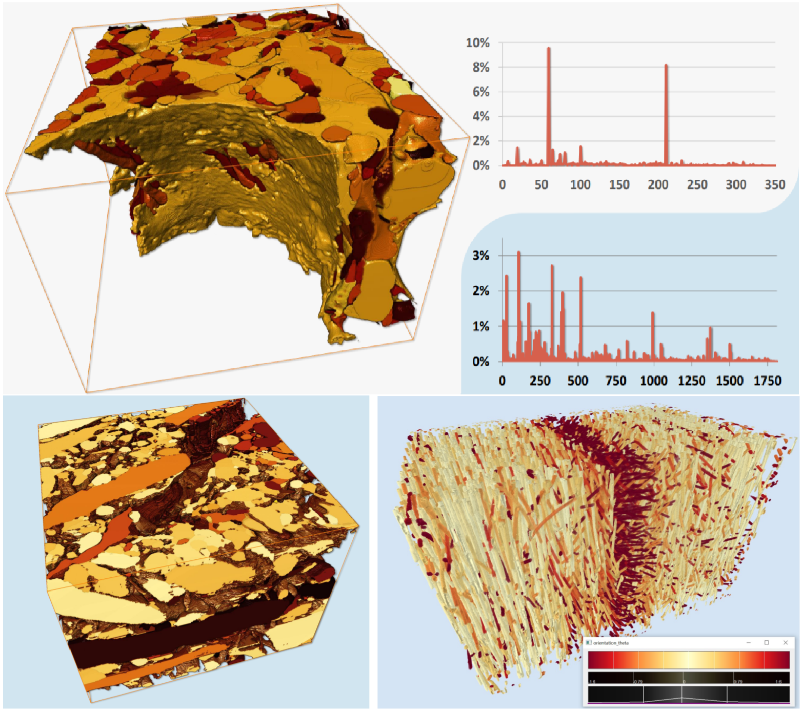
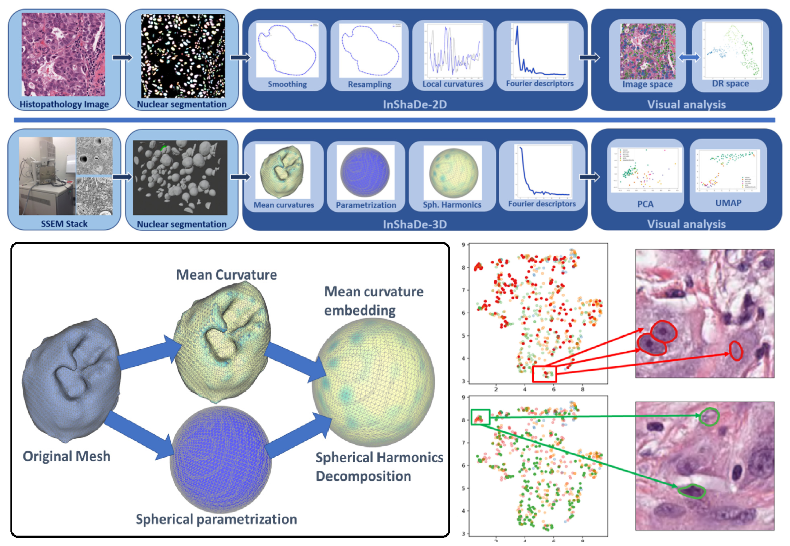
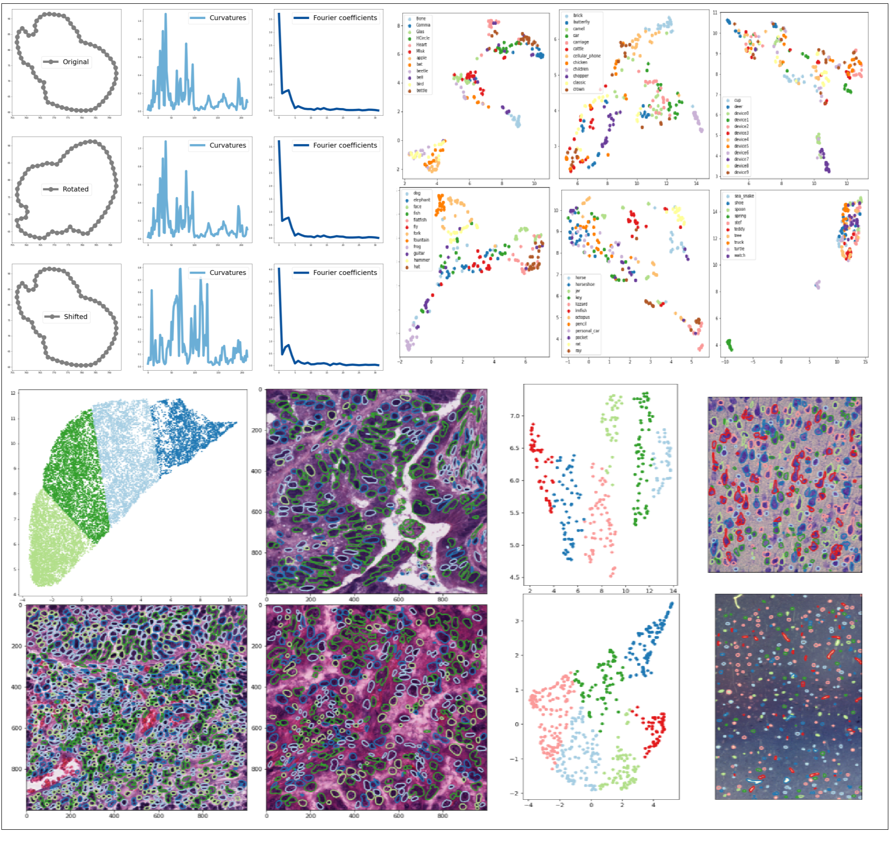
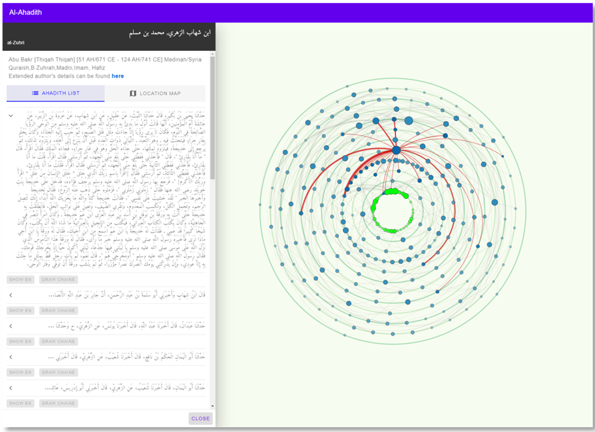
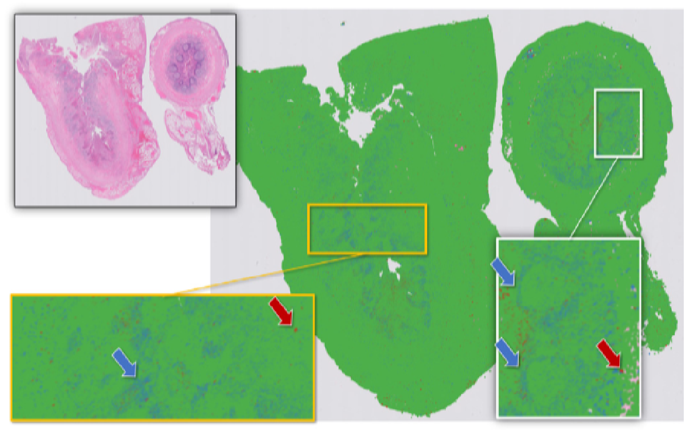
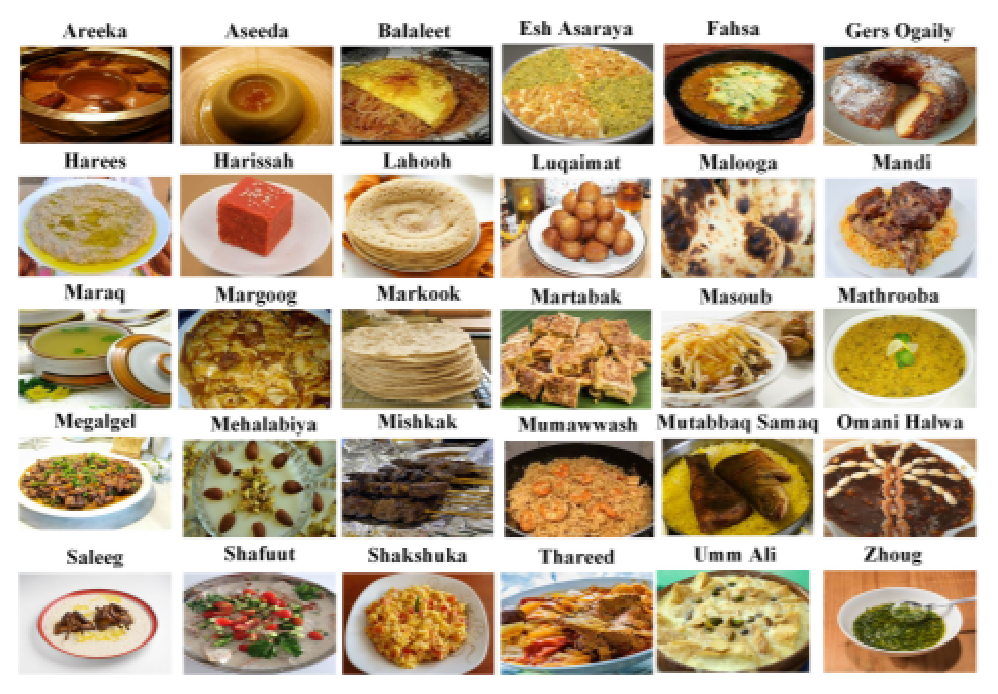

Selected Publications


InShaDe: Invariant Shape Descriptors for visual 2D and 3D cellular and nuclear shape analysis and classification.
Abstract: We present a shape processing framework for visual exploration of cellular nuclear envelopes extracted from microscopic images arising in histology and neuroscience. The framework is based on a novel shape descriptor of closed contours in 2D and 3D. In 2D, it relies on a geodesically uniform resampling of dis- crete curves to compute unsigned curvatures at vertices and edges based on discrete differential geome- try.Read More
Our descriptor is, by design, invariant under translation, rotation, and parameterization. We achieve the latter invariance under parameterization shifts by using elliptic Fourier analysis on the resulting cur- vature vectors. Uniform scale-invariance is optional and is a result of scaling curvature features to z- scores. We further augment the proposed descriptor with feature coefficients obtained through sparse coding of the extracted cellular structures using K-sparse autoencoders. For the analysis of 3D shapes, we compute mean curvatures based on the Laplace-Beltrami operator on triangular meshes, followed by computing a spherical parameterization through mean curvature flow. Finally, we compute the Spheri- cal Harmonics decomposition to obtain invariant energy coefficients. Our invariant descriptors provide an embedding into a fixed-dimensional feature space that can be used for various applications, e.g., as input features for deep and shallow learning techniques or as input for dimension reduction schemes to pro- vide a visual reference for clustering shape collections. We demonstrate the capabilities of our framework in the context of visual analysis and unsupervised classification of 2D histology images and 3D nuclear envelopes extracted from serial section electron microscopy stacks.

InShaDe: Invariant Shape Descriptors for visual analysis of histology 2D cellular and nuclear shapes.
Abstract: We present a shape processing framework for visual exploration of cellular nuclear envelopes extracted from histology images. The framework is based on a novel shape descriptor of closed contours relying on a geodesically uniform resampling of discrete curves to allow for discrete differential-geometry-based computation of unsigned curvature at vertices and edges.Read More
Our descriptor is, by design, invariant under translation, rotation and parameterization. Moreover, it additionally offers the option for uniform-scale-invariance. The optional scale-invariance is achieved by scaling features to z-scores, while invariance under parameterization shifts is achieved by using elliptic Fourier analysis (EFA) on the resulting curvature vectors. These invariant shape descriptors provide an embedding into a fixed-dimensional feature space that can be utilized for various applications: (i) as input features for deep and shallow learning techniques; (ii) as input for dimension reduction schemes for providing a visual reference for clustering collection of shapes. The capabilities of the proposed framework are demonstrated in the context of visual analysis and unsupervised classification of histology images.
SlowDeepFood: a food computing framework for regional gastronomy.
Abstract: Food computing recently emerged as a stand-alone research field, in which artificial intelligence, deep learning, and data science methodologies are applied to the various stages of food production pipelines. Food computing may help end-users in maintaining healthy and nutritious diets by alerting of high caloric dishes and/or dishes containing allergens.Read More
A backbone for such applications, and a major challenge, is the automated recognition of food by means of computer vision. It is therefore no surprise that researchers have compiled various food data sets and paired them with well-performing deep learning architecture to perform said automatic classification. However, local cuisines are tied to specific geographic origins and are woefully underrepresented in most existing data sets. This leads to a clear gap when it comes to food computing on regional and traditional dishes. While one might argue that standardized data sets of world cuisine cover the majority of applications, such a stance would neglect systematic biases in data collection. It would also be at odds with recent initiatives such as SlowFood, seeking to support local food traditions and to preserve local contributions to the global variation of food items. To help preserve such local influences, we thus present a full end-to-end food computing network that is able to: (i) create custom image data sets semi-automatically that represent traditional dishes; (ii) train custom classification models based on the EfficientNet family using transfer learning; (iii) deploy the resulting models in mobile applications for real-time inference of food images acquired through smart phone cameras. We not only assess the performance of the proposed deep learning architecture on standard food data sets (e.g., our model achieves 91.91% accuracy on ETH’s Food-101), but also demonstrate the performance of our models on our own, custom data sets comprising local cuisine, such as the Pizza-Styles data set and GCC-30. The former comprises 14 categories of pizza styles, whereas the latter contains 30 Middle Eastern dishes from the Gulf Cooperation Council members.People
Open Projects

Ahadeeth Visulaization
Project Sponsorship.Some brief description about the project might go here. More details about the project can be explored by clicking on the link below this pragraph.
Read More

Histopathology Analysis
Project Sponsorship.Some brief description about the project might go here. More details about the project can be explored by clicking on the link below this pragraph.
Read More

Food Classification Framework
Project Sponsorship.Some brief description about the project might go here. More details about the project can be explored by clicking on the link below this pragraph.
Read More